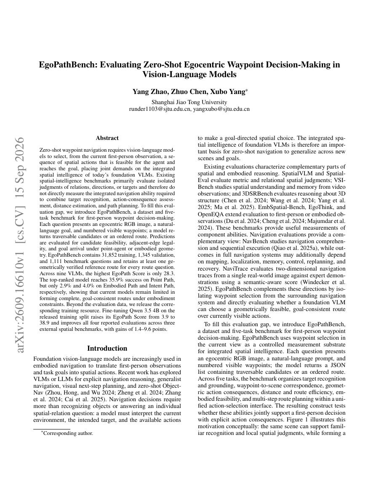
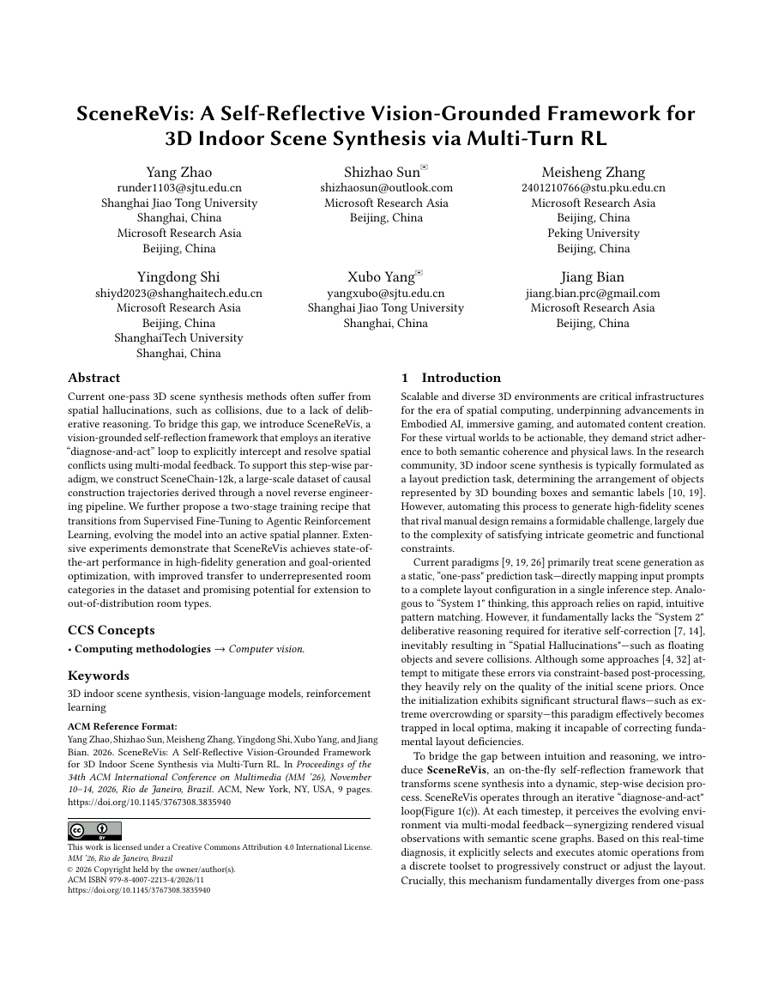
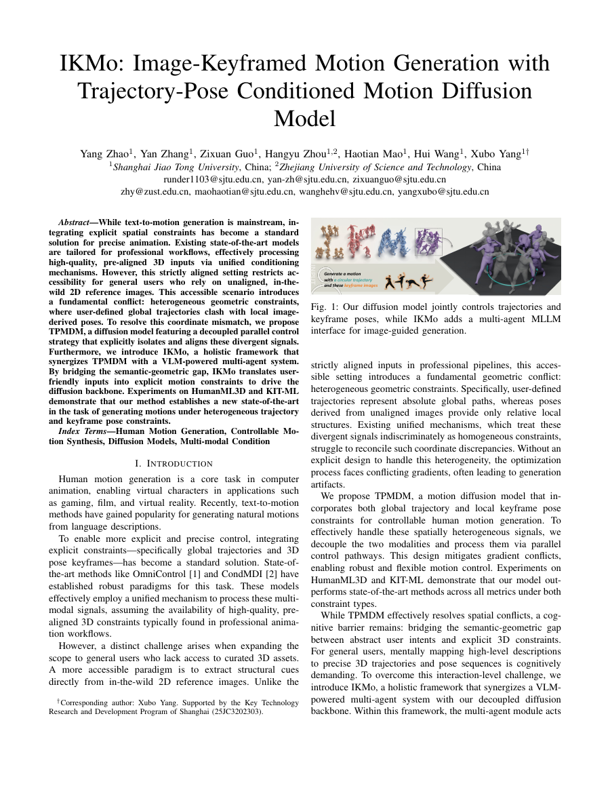

论文首页 · 放大
EgoPathBench: Evaluating Zero-Shot Egocentric Waypoint Decision-Making in Vision-Language Models
从第一视角图像出发，评估视觉语言模型的路径点决策能力，连接目标识别、空间推理与具身约束下的路径规划。
空间智能 · 研究与探索
上海交通大学计算机学院 · 直博四年级
我的研究围绕三维场景生成、可控人体动作生成与具身导航展开，探索模型如何构建三维世界、理解空间，并将感知转化为行动。
拖动旋转 · 方向键调整视角
01 / PUBLICATIONS
会议论文与预印本 · 2026

从第一视角图像出发，评估视觉语言模型的路径点决策能力，连接目标识别、空间推理与具身约束下的路径规划。

让模型在生成中观察、反思与修正。通过视觉反馈和多轮强化学习，逐步构建空间布局合理的三维室内场景。

结合图像关键帧、文本与轨迹，通过解耦的轨迹和姿态控制生成可控的人体动作。
02 / BACKGROUND
教育与实习
沈元学院 · 本科
2019 — 2023
计算机学院 · 直博四年级
2023 — 2028（预计）
Microsoft Research Asia · MSRA
2025.08 — 2026.02
AGIBOT
2026.08 — 至今
03 / GET IN TOUCH
欢迎交流研究想法，或探讨潜在的合作。